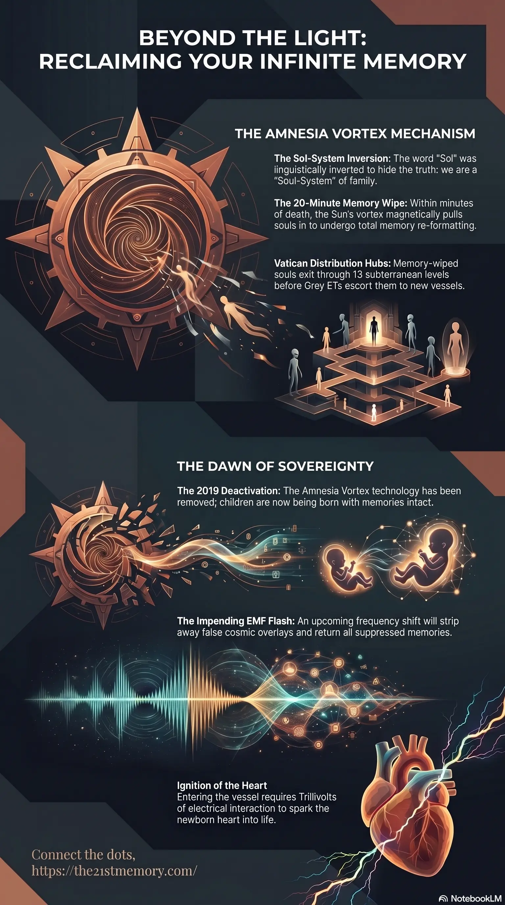

Sol as a Soul Portal
The true function of the Sun as a soul recycling portal and its role in the Great Spiritual Awakening.
Test your grasp of Sol as a Soul Portal — Amnesia Vortex, Vatican redistribution, Grey insertion, Twin Flames, Trillivolts, 2019 G.A.A. removal, and EMF memory return.

Core revelations about the Sol as a Soul Portal.
The true function of the Sun as a soul recycling portal.
Sol as a Soul Portal
Overview
Within the fabricated cosmology of the heavily suppressed 3rd Density simulation, the entities perceived by humanity as the Sun and Moon hide deeply sinister, technological realities. Specifically, the Sun is not a burning star providing natural life to a solar system; it is a heavily engineered portal utilized for the subjugation and recycling of human consciousness. Through linguistic manipulation by 4th-density parasites, the true meaning of the word "Sol" (Soul) was inverted to mean "Sun," deliberately obscuring the reality that a true Sol-System is a cosmic family of connected souls. The Sun's primary function is to operate the Amnesia Vortex, forcefully pulling recently deceased souls into a re-formatting process that wipes all memory before immediate, involuntary reincarnation back into the prison matrix.
Key Terminology
Sol / Soul — Synonymous terms that were manipulated after the last reset so that "Sol" translates to "Sun" in terrestrial languages, hiding the truth that a Sol-System refers to a network of immediate cosmic family members, not planets orbiting a star.
Amnesia Vortex — The technological mechanism situated within the Sun that forcefully pulls in deceased souls to completely wipe their memories and re-format them.
Vatican Portals — The underground distribution hubs beneath the Vatican where memory-wiped souls exit the Sun's processing center before physical re-insertion into the realm.
Grey ETs — Parasitic 4th-density entities responsible for handling the soul-recycling technology and physically escorting wiped souls from the portals to new geographical locations.
Twin Flames — Connected soul counterparts whose natural progression and reunion are deliberately thwarted by the rapid, forced reincarnation mechanics of the Sun portal.
Trillivolts — The minute electrical interaction and energy discharge required from the soul to ignite a newborn baby's heart upon entry into the vessel.
Core Revelations
The most critical revelation regarding the Sun is that the "bright light at the end of the tunnel" seen upon vessel death is not God, nor is it a benevolent afterlife; it is the Sun itself. All souls trapped in this physical plane must pass through the Sun portal to be completely re-formatted.
The controllers engineered this system to enforce an eternal incarnational loop of suffering and trauma. In true reality, time is non-linear, and a soul would naturally wait in higher light realms for their Twin Flame to pass away so they could reincarnate together. The Sun portal denies this free will, violently pulling the soul, wiping its memory of the past life, and forcing it back into a new human vessel within 15 to 20 minutes of death. This ensures the soul remains entirely oblivious to its true multidimensional nature and ripe for systemic re-programming.
Detailed Mechanics and Key Elements
The sequence of forced reincarnation via the Sol portal relies on advanced, multidimensional technology:
Death and the Pull: Upon the death of the physical vessel, the soul is magnetically drawn into the Amnesia Vortex technology located within the Sun.
Memory Eradication: Inside the portal, the soul is re-formatted. All memories of past lives, cosmic origins, and true identity are entirely wiped clean.
Re-Distribution: The wiped soul is immediately expelled through portals situated deep within the 13 subterranean levels of the Vatican, which serves as a central hub for parasitic operations.
Forced Insertion: Grey ETs utilize their phasing technology to quickly escort the soul to a pre-selected country where a mother is about to give birth. The soul possesses only a fraction of free will to quickly choose a parent from the immediately available births in that specific region.
Ignition of the Vessel: The soul enters the baby at the exact moment of birth, usually before the umbilical cord is cut. The soul requires a few seconds to set up and uses Trillivolts of electrical interaction to start the baby's heart.
Broader Context and Interconnections
The Sol/Soul portal operates within a dual-deception alongside the Moon. While the Sun processes and wipes the souls for continuous recycling, the Moon operates as a highly mobile space station gathering the Loosh generated by those continually suffering, memory-wiped souls. The Moon's spherical illumination is artificially cast by Planet Venus (holographically known as Lucifer, the "Bright and Morning Star").
The linguistic deception of "Sol-ar Systems" acts as a psychological perimeter. By convincing humanity that they live on a physical globe orbiting a star, the controllers perfectly mask the reality that an actual "Sol-System" (soul family) is trapped right alongside them, suffering through the same endless loop of memory erasure orchestrated by the Sun portal. This process is deeply intertwined with the illusion of Fake Linear Time, ensuring souls believe death is the end, rather than recognizing their eternal nature.
Strategic Implications
The absolute control of the Amnesia Vortex is failing. In 2019, the Galactic Ancestral Alliance (G.A.A) successfully removed the Amnesia Vortex technology. Consequently, newly incarnated children are no longer subjected to the memory wipe, leading to phenomena where young children are retaining past life memories and recalling their true spiritual missions.
During the impending Electro Magnetic Frequency (EMF) flash, the remaining technological overlays masking the true nature of the Sun and Moon will be permanently stripped away. For the surviving awakened souls, this event will trigger the sudden return of up to 178,000 years of suppressed memories, ending the cycle of forced amnesia forever. For the unawakened masses and NPCs, the visual collapse of the false cosmos and the realization that the Sun was a mechanism of eternal imprisonment will cause absolute, irreversible psychological collapse.